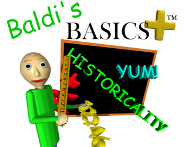

Baldi's Basics Plus
Baldi's Basics Plus
Details
|  | |
| Playtime | Not Played |
| Last Activity | Never |
| Added | 12/31/2023 7:18:53 |
| Modified | 12/31/2023 8:30:57 |
| Completion Status | Not Played |
| Library | Itch.io |
| Source | itch.io |
| Platform | PC (Windows) |
| Release Date | 4/1/2020 |
| Community Score | |
| Critic Score | |
| User Score | |
| Genre | Indie Strategy |
| Developer | Basically, Games! |
| Publisher | Basically, Games! |
| Feature | Single Player |
| Links | Official Steam Itch Twitch |
| Tag | |
Description
Baldi's Basics Plus version 0.3.8 has just released!
Check below for more info on the current state of the game!
Baldi's Basics Plus is like the original game, but PLUS! The same cruddy edutainment horror type parody theme is back, but with hugely expanded gameplay features, including procedurally generated levels, field trip minigames, crazy random events, PLUS more characters, more items, and more chaos!
This game is not what it seems...
Baldi's Basics Plus is a survival horror roguelite that parodies cheap 90's edutainment and never takes itself too seriously. You will encounter strange characters, find useful items, go on field trips and more as you explore Baldi's ever changing super schoolhouse, and as you explore the game itself, you'll start to realize it is not what it seems...
So, what exactly do you do in this game? You collect notebooks while playing hide and seek with Baldi! Sounds easy right? Wrong. Baldi can hear many of your actions, and he uses those sounds to try and find you. He's also invited many friends to come and play, who can cause a lot of trouble. Get to know them though and you can use them to your advantage! You'll also find lots of items scattered around the school. These are the key to success. Use them wisely if you want to have a chance at beating Baldi!
Near infinite replayability
Baldi's Basics Plus randomizes so many different things, every time you play will be a different experience!
- Procedurally generated levels - The levels change every time you play! Not only will the layout change, but the types of rooms and obstacles, you find will change too!
- Random events - One moment everything is fine, the next the school is flooding, or fills with fog! Random events can begin at any moment, so make sure you're ready for them!
- Mixing and matching characters - Each time you play, you'll get to see random combination of characters.
All these variables add up to make each playthrough a unique experience!
Lots of ways to play
Baldi's Basics Plus features many different modes to test players in different ways!
- Main Mode - Complete a series of randomly generated levels to win! Run out of lives and you'll have to start over.
- Endless Mode - See how many notebooks you can collect before being caught by Baldi! Compete by playing on pre-made levels, or go crazy and try playing on a randomly generated one.
- Challenge Mode - As you play more of the Main Mode, you'll unlock challenges! Challenges offer unique scenarios you won't find in the main game. One might have you sneaking around the school to avoid being seen by the Principal of the Thing, another might have both you and Baldi running at super high speeds!
- Field Trips Mode - Play field trips found in the main game whenever you like! You can try to set high scores, or just practice!
Early access info
Baldi's Basics Plus is going to launch this spring as an early access title. This means you will be able to buy and play the game, but it won't be finished yet! As such you can expect to encounter some bugs, and there will be some missing features for a while. However, you will also receive all future updates for free and get to be a part of this game's development! Check out the FAQ below for more info.
Why Early Access?
Baldi's Basics Plus has become a much longer project than I initially anticipated (That's game development for you!). However, I feel like it has reached a very playable and enjoyable state, so instead of making everyone wait who knows how long to be able to play, I've decided to release the game in early access so everyone can enjoy it sooner and take part in the development process!
Approximately how long will this game be in Early Access?
Currently, I'm thinking the game will probably be in development for another year or two until it reaches a state where I could call it finished.
How is the full version planned to differ from the Early Access version?
The full version will differ mainly by having more content. More NPCs, more random events, more items, more level styles, more everything! Of course, the full version won't just be the early access with more content. As the game develops there will be lots of polishing, QoL improvements, new major features added, etc. Perhaps most importantly, adjustments to game balance will mostly be done when the early access is coming to a close. The full version will also include some secrets and story elements that will not be found in the early access versions.
What is the current state of the Early Access version?
Keep an eye on this list as development progresses to see what's being added!
Features that are currently implemented include:
- Hide and Seek (The game's main mode), which requires the player to beat a series of randomly generated levels. (Currently has three levels to beat, more are planned)
- Challenge Mode (Currently there are three challenge maps, more are planned)
- Endless Mode
- Field trip Mode
- Custom NPC AI (Currently there are 12 fully functional NPCs, more are planned)
- Procedural level generation
- Random events (Currently there are seven, more are planned)
- Field trips (Currently there are two, more are planned)
- "Educational" activities, which are very short puzzles or mini-games that must be completed to collect notebooks in some modes (Currently there is one, more are planned).
- Custom lighting system
- In-game shop where you can purchase items between levels
- Save and continue system, which will allow you to quit in the middle of a game of Hide and Seek and then continue later where you left off
Planned features that are not yet implemented include:
- Secret levels
- In-game achievement system.
- Horror elements (This will come much later into development. Currently the game has very little in the way of spooks)
- Crappy "edutainment" elements, including things like more interactive menus (Where you can click on things!) and other common edutainment game tropes.
- Adaptive music
Will the game be priced differently during and after Early Access?
Yes, as the game develops and more content is added, the price will increase accordingly. Of course, anyone who has already purchased the game will continue to receive all updates for free, even after price increases.
How are you planning on involving the Community in your development process?
Feedback is crucial to the development of this insane game! I will mainly use community feedback for fixing bugs, as well as balancing and quality of life improvements.
© 2020 Basically Games, LLC